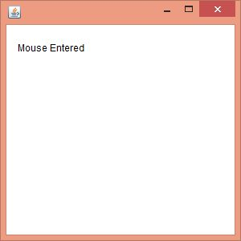
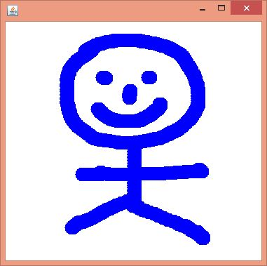
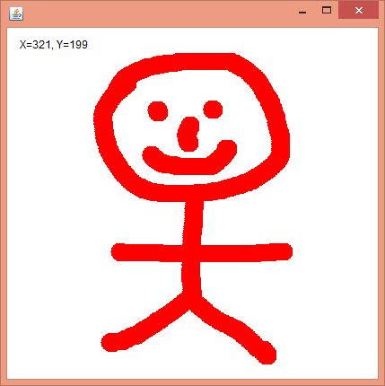

Java MouseListener Interface
17 Mar 2025 | 1 min read
The Java MouseListener is notified whenever you change the state of mouse. It is notified against MouseEvent. The MouseListener interface is found in java.awt.event package. It has five methods.
Methods of MouseListener Interface
The signature of 5 methods found in MouseListener interface are given below:
public abstract void mouseClicked(MouseEvent e);
public abstract void mouseEntered(MouseEvent e);
public abstract void mouseExited(MouseEvent e);
public abstract void mousePressed(MouseEvent e);
public abstract void mouseReleased(MouseEvent e);
Examples
Java MouseListener Example
MouseListenerExample.java
import java.awt.*;
import java.awt.event.*;
public class MouseListenerExample extends Frame implements MouseListener {
Label l;
MouseListenerExample() {
addMouseListener(this);
l = new Label();
l.setBounds(20, 50, 100, 20);
add(l);
setSize(300, 300);
setLayout(null);
setVisible(true);
}
public void mouseClicked(MouseEvent e) {
l.setText("Mouse Clicked");
}
public void mouseEntered(MouseEvent e) {
l.setText("Mouse Entered");
}
public void mouseExited(MouseEvent e) {
l.setText("Mouse Exited");
}
public void mousePressed(MouseEvent e) {
l.setText("Mouse Pressed");
}
public void mouseReleased(MouseEvent e) {
l.setText("Mouse Released");
}
public static void main(String[] args) {
new MouseListenerExample();
}
}
Output:
Java MouseMotionListener Example 1
MouseMotionListenerExample.java
import java.awt.*;
import java.awt.event.*;
public class MouseMotionListenerExample extends Frame implements MouseMotionListener {
MouseMotionListenerExample() {
addMouseMotionListener(this);
setSize(300, 300);
setLayout(null);
setVisible(true);
}
public void mouseDragged(MouseEvent e) {
Graphics g = getGraphics();
g.setColor(Color.BLUE);
g.fillOval(e.getX(), e.getY(), 20, 20);
}
public void mouseMoved(MouseEvent e) {}
public static void main(String[] args) {
new MouseMotionListenerExample();
}
}
Output:
Java MouseMotionListener Example 2
Paint.java
import java.awt.*;
import java.awt.event.MouseEvent;
import java.awt.event.MouseMotionListener;
public class Paint extends Frame implements MouseMotionListener {
Label l;
Color c = Color.BLUE;
Paint() {
l = new Label();
l.setBounds(20, 40, 100, 20);
add(l);
addMouseMotionListener(this);
setSize(400, 400);
setLayout(null);
setVisible(true);
}
public void mouseDragged(MouseEvent e) {
l.setText("X=" + e.getX() + ", Y=" + e.getY());
Graphics g = getGraphics();
g.setColor(Color.RED);
g.fillOval(e.getX(), e.getY(), 20, 20);
}
public void mouseMoved(MouseEvent e) {
l.setText("X=" + e.getX() + ", Y=" + e.getY());
}
public static void main(String[] args) {
new Paint();
}
}
Output:
